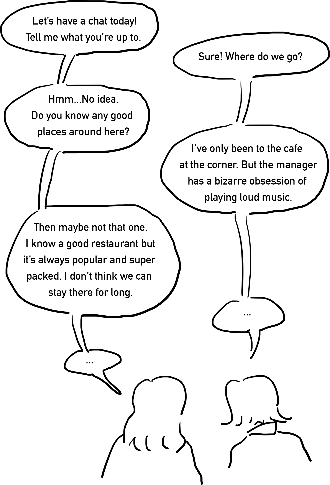
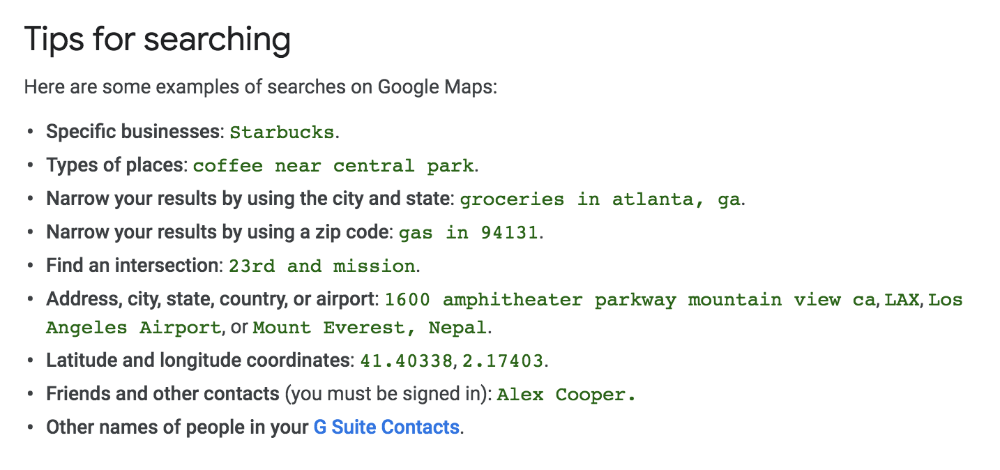

In response to Unter’s brief, the question I decided to tackle through design is this:
How do you find places by not names, but the environment?
Life is easy when you have Google Maps and a specific place to go in mind. However, it might be hard to decide where to go if you only have very vague ideas in mind like
“this afternoon I want to sit down and have a chat with my friend for about 2 hours at a place where it’s bright and not too noisy, and it should be close to public transport because I cannot walk too far in the shoes i am wearing today”
but you are not so familiar with this area.
A way to search for places by complicated conditions or subtle feelings are missing from the pupolar tools in use today. For example, Google Maps, the navigation app most of the people rely on day-to-day to find places, only support these ways to search:
Hence, I decided to make a tool that enable people to find places more accurately through filtering the properties and the feelings of places.